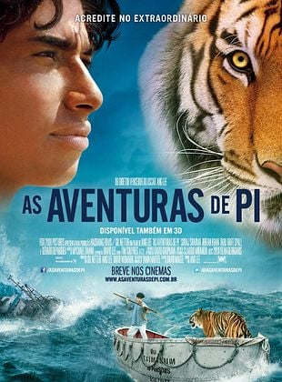
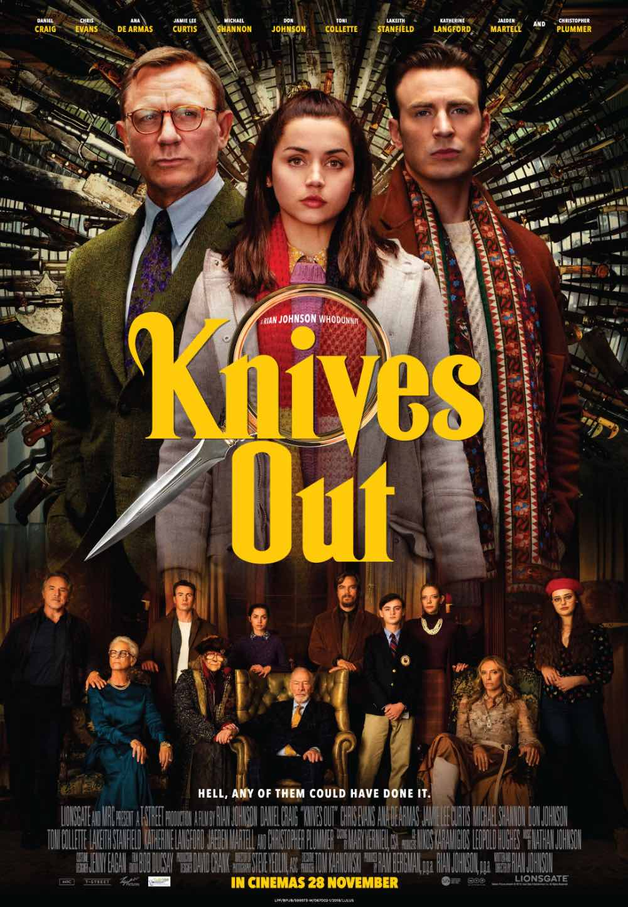
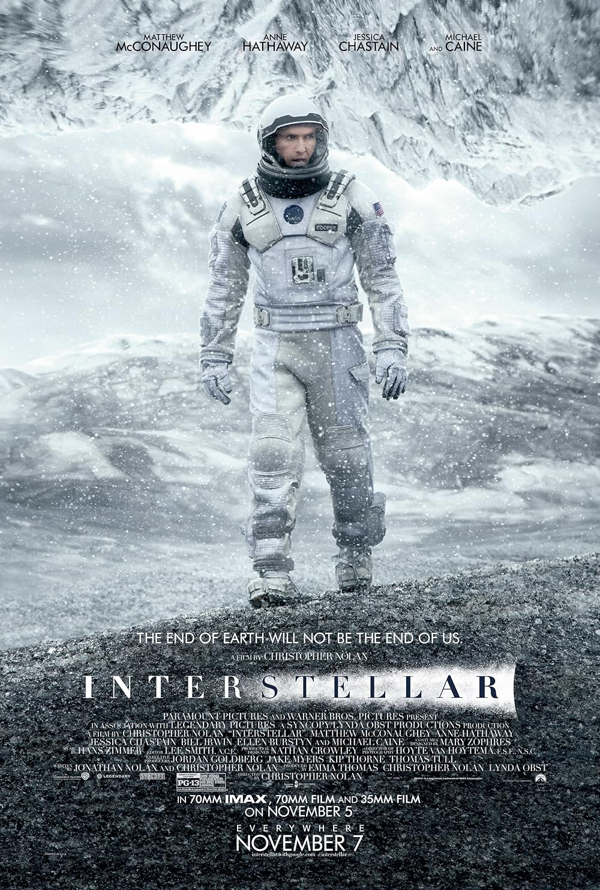

Duna
Paul Atreides viaja ao perigoso planeta Arrakis para garantir o futuro de sua família.
Os filmes desta semana. Membros do Clube MaisPipoca ganham um combo de pipoca em cada sessão.
Paul Atreides viaja ao perigoso planeta Arrakis para garantir o futuro de sua família.

Após um naufrágio, o jovem Pi sobrevive 227 dias num bote no oceano Pacífico.

Um famoso escritor é encontrado morto, e o detetive Benoit Blanc investiga a família.

Batman enfrenta o Coringa, que quer mergulhar Gotham no caos.

Uma atriz e um pianista se apaixonam enquanto perseguem seus sonhos em Los Angeles.

Astronautas atravessam um buraco de minhoca em busca de um novo lar para a humanidade.